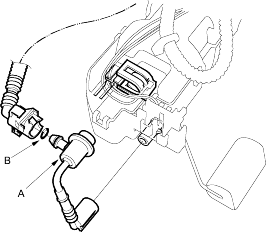
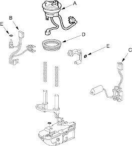

- Remove the fuel pump (see page 11-439).
- Remove the fuel pressure regulator (A).

- Install the part in the reverse order of removal with a new O-ring (B).
- Remove the fuel pump (see page 11-439).
- Remove the fuel filter (A).

- Install the part in the reverse order of removal with a new base gasket (D) and new O-rings (E), then check these items:
- When connecting the wire harness, make sure the connection is secure and the terminal (B) is firmly locked into place.
- When installing the fuel gauge sending unit (C), make sure the connection is secure and the connector is firmly locked into place. Be careful not to bend or twist it excessively.